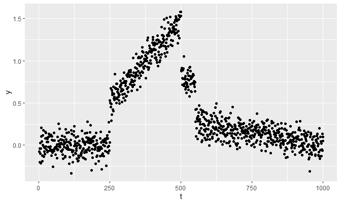
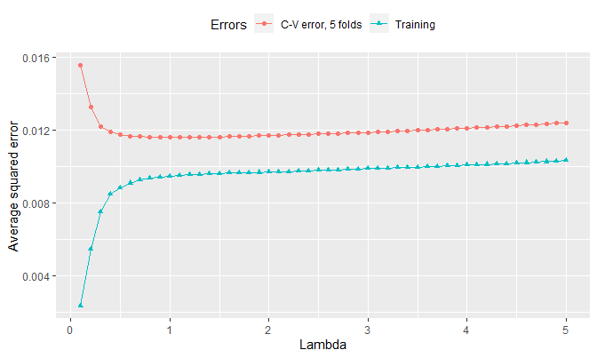

The following external R packages/functions are used:
library(dplyr)
library(ggplot2)
gather <- tidyr::gatherThis note is a continuation from Dealing with a non-separable penalty term under 2018: Statistical Computation.
1. Introduction
This note concerns with a cross-validation method. In particular, it is interested in finding an optimal tuning parameter \(\lambda\) and a corresponding \(\boldsymbol{\theta}\) that yields a lowest cross-validation error. The note will demonstrate how the cross-validation is used to find \(\lambda\), and provide functions that help achieve the goal.
2. Choosing a tuning parameter
From the previous note, I assumed: \[y_t = \theta_t + \varepsilon_t\] with \(\varepsilon_t \stackrel{iid}{\sim} N(0, \sigma^2)\), and used the cost function that has a penalty: \[\text{cost}(\theta_1, \phi_2, \dots, \phi_n) = \sum_{t = 1}^{n} (y_t - \theta_t)^2 + \lambda \sum_{t = 2}^{n} |\phi_t|\] where \(\phi_t = \theta_t - \theta_{t - 1}\).
To find an optimal \(\lambda\), we shall use the following strategy:
- Divide \(y_t\)’s into \(k\) folds where the \(s\)th fold is defined as \(\text{Fold}_s := \{ y_{t} \}_{t \in A_s}\), where \(A_s = \{t \leq n \text{ | } t = s + kt^*, t^* \geq 0 \}\).
- Given \(\lambda\), compute the estimates \(\boldsymbol{\theta}_s\)’s based on \(\{y_t \}_{t \notin \text{Fold}_s}\) for all \(s = 1, \dots, k\).
- Define \(\text{interpolate}_{\boldsymbol{\theta}_s}(t)\) for each \(s\), an interpolating function based on \(\boldsymbol{\theta}_s\).
- Compute \(\text{loss}_s\) for each \(s\) where \[\text{loss}_s := \frac{1}{|\text{Fold}_s|} \sum_{t \in \text{Fold}_s} (\text{interpolate}_{\boldsymbol{\theta}_s}(t) - y_t)^2\]
- Compute \(\text{error} := \frac{1}{k}\sum_{s = 1}^{k} \text{loss}_s\).
- Choose \(\lambda\) that yields a minimum \(\text{error}\).
Step 1 is performed by split_data_1d:
split_data_1d <- function(y, num_folds, fold) {
# y: a numeric vector
# num_folds: a natural number <= number of observations, e.g. 5
# fold: a natural number <= num_folds, e.g. 3
n <- length(y)
indices <- 1:n
assign_folds <- rep(1:num_folds, n %/% num_folds + 1)[indices]
partition <- split(indices, assign_folds)
fold_indices <- partition[[fold]]
y_fold <- y[fold_indices]
y_rest <- y[-fold_indices]
list(
y_fold = list(
data = y_fold,
indices = fold_indices
),
y_rest = list(
data = y_rest,
indices = (1:n)[!(1:n %in% fold_indices)]
)
)
}Step 2 is performed by fusion_estimates, a function defined in the previous note:
fusion_estimates <- function(y, theta, lambda, max_iter = 1000, eps = 1e-5) {
n <- length(y)
if (missing(theta)) {theta <- y}
if (length(theta) != n) {
stop(paste0(
'\nError in fusion_estimates():\n',
'The length of given initial theta is ', length(theta),
', which is not equal to length(y) == ', n, '.'
))
}
phi <- diff(theta)
phisums_old <- cumsum(phi)
theta_1_new <- (sum(y) - sum(phisums_old)) / n
cost <- sum((y - theta)^2) + lambda * sum(abs(phi))
costs <- NULL
costs[1] <- cost # costs
there_is_a_progress <- T
iter <- 0
while (there_is_a_progress & iter < max_iter) {
# Store new phi_1 (= 0) to phi_n in phi_new
phi_new <- numeric(length = n)
for (j in 2:n) {
phisums_new <- cumsum(phi_new)
req <- sum(
phisums_old[(j - 1):(n - 1)] -
phisums_old[j - 1] + phisums_new[j - 1]
)
discri <- sum(y[j:n]) - (n - j + 1) * theta_1_new - req
if (discri < -lambda / 2) {
phi_new[j] <- (discri + lambda / 2) / (n - j + 1)
} else if (discri > lambda / 2) {
phi_new[j] <- (discri - lambda / 2) / (n - j + 1)
} # already 0 otherwise
}
phi_new <- phi_new[-1]
phisums_new <- phisums_new[-1]
theta <- c(theta_1_new, theta_1_new + phisums_new)
cost <- sum((y - theta)^2) + lambda * sum(abs(phi_new))
theta_1_new <- (sum(y) - sum(phisums_new)) / n
phisums_old <- phisums_new
iter <- iter + 1
costs[iter + 1] <- cost
there_is_a_progress <- !(abs(costs[iter] - cost) <= eps)
}
list(
theta = theta,
phi = phi_new,
lambda = lambda,
iter = iter,
costs = costs # the first cost is calculated at iteration 0
)
}Step 3 is done by interpolate_1d:
interpolate_1d <- function(t, theta_rest, indices_rest, n) {
# t: a number, or a numeric vector whose minimum is at least 1 and
# whose maximum is at most n
# theta_rest: a numeric vector
# indices_rest: an integer vector of length length(theta_rest)
# n: an integer; the length of "full" data
indices <- sort(indices_rest)
if (max(t) > n || min(t) < 1) {
stop(paste0(
'\nError in interpolate_1d():\n',
'Extrapolation not available;\n',
'either max(t) > length of full data or min(t) < 1 happened'
))
}
if (length(theta_rest) != length(indices)) {
stop(paste0(
'\nError in interpolate_1d():\n',
'length(theta_rest) != length(indices)'
))
}
sapply(t, function(d){theta_rest[which.min(abs(d - indices))]})
}\(\text{loss}_s\) in step 4 is computed with loss_1d_fold:
loss_1d_fold <- function(y, theta, indices_fold) {
# y: a numeric vector of length n
# theta: a numeric vector of length < n
# indices_fold: an integer vector of length n - length(theta)
n <- length(y)
indices_fold <- sort(indices_fold)
y_fold <- y[indices_fold]
indices_rest <- (1:n)[!(1:n %in% indices_fold)]
interpolate <- interpolate_1d(indices_fold, theta, indices_rest, n)
mean((interpolate - y_fold)^2)
}and for the sake of computing training error, we define loss_1d as well:
loss_1d <- function(y, theta) {
# y: the same as in loss_1d_fold
# theta: a numeric vector of length n
mean((y - theta)^2)
}We shall now compute the cross-validation error in cv_error_1d:
cv_error_1d <- function(y, k, lambda) {
# y: a numeric vector
# k: an integer; a number of folds
# lambda: a positive real number
losses <- numeric(length = k)
for (s in 1:k) {
split_s <- split_data_1d(y, k, s)
fusion_s <- fusion_estimates(split_s$y_rest$data, lambda = lambda)
losses[s] <- loss_1d_fold(y, fusion_s$theta, split_s$y_fold$indices)
}
list(error = mean(losses), losses = losses)
}3. An example
The example in the previous note is regenerated:
set.seed(1024)
n <- 1000
t <- 1:n
f <- function(t) {t / 250 - .5}
g <- function(t) {-(.25 / 449) * t + 250 / 449}
true_theta <- c(rep(0, 249), f(250:500), rep(.75, 50), g(551:1000))
y <- true_theta + rnorm(1000, 0, 0.1)
qplot(t, y)
The following lambda values will be considered. Also, say \(k = 5\), an another arbitrary choice:
lambdas <- seq(.1, 5, by = .1)
k <- 5For each lambda, let’s compute the training error and the cross-validation error:
start <- Sys.time()
errors <- t(sapply(
lambdas,
function(l) {
c(
cv_error_1d(y, k, l)$error,
loss_1d(y, fusion_estimates(y, lambda = l)$theta)
)
}
)) %>%
'colnames<-'(c(paste0('C-V error, ', k, ' folds'), 'Training')) %>%
cbind(lambdas = lambdas) %>%
as_tibble()
end <- Sys.time()This process takes a while. Here’s the link to the errors csv file.
end - start## Time difference of 34.66667 minsThe visualization is as follows:
errors %>%
gather(Errors, value, -lambdas) %>%
ggplot(aes(x = lambdas, y = value, col = Errors)) +
geom_point(aes(shape = Errors)) +
geom_line() +
labs(x = 'Lambda', y = 'Average squared error') +
theme(legend.position = 'top')
The training error increases as lambda increases. This makes sense since, as shown in the previous note, \(\theta_t \to \overline{y}\) for all \(t\) as \(\lambda\) gets greater, and \(\theta_t = \overline{y}\) for all \(t\) starting from a certain value of \(\lambda\). That is, as lambda increases, the fusion estimates start to move away from the least squares estimates \(\hat{\theta}_t\)’s (\(= y_t\) for all \(t\)), which are estimates when \(\lambda = 0\) and are values that minimize the average squared error, so the training error increases as shown in the plot.
The minimum lambda that yields the lowest cv-error is therefore:
errors %>%
gather(Errors, value, -lambdas) %>%
filter(Errors != 'Training') %>%
filter(value == min(value)) %>%
pull(lambdas)## [1] 1The proposed value of \(\lambda\) is 1.
Session info
R session info:
sessionInfo()## R version 3.6.0 (2019-04-26)
## Platform: x86_64-w64-mingw32/x64 (64-bit)
## Running under: Windows >= 8 x64 (build 9200)
##
## Matrix products: default
##
## locale:
## [1] LC_COLLATE=English_Canada.1252 LC_CTYPE=English_Canada.1252
## [3] LC_MONETARY=English_Canada.1252 LC_NUMERIC=C
## [5] LC_TIME=English_Canada.1252
##
## attached base packages:
## [1] stats graphics grDevices utils datasets methods base
##
## other attached packages:
## [1] ggConvexHull_0.1.0 ggplot2_3.1.1 dplyr_0.8.1
## [4] reticulate_1.12 rmarkdown_1.13 magrittr_1.5
## [7] itertools2_0.1.1
##
## loaded via a namespace (and not attached):
## [1] Rcpp_1.0.1 plyr_1.8.4 compiler_3.6.0 pillar_1.4.1
## [5] prettydoc_0.2.1 iterators_1.0.10 tools_3.6.0 zeallot_0.1.0
## [9] digest_0.6.19 jsonlite_1.6 evaluate_0.14 tibble_2.1.3
## [13] gtable_0.3.0 lattice_0.20-38 png_0.1-7 pkgconfig_2.0.2
## [17] rlang_0.3.4 Matrix_1.2-17 cli_1.1.0 rstudioapi_0.10
## [21] yaml_2.2.0 xfun_0.7 withr_2.1.2 stringr_1.4.0
## [25] xml2_1.2.0 knitr_1.23 vctrs_0.1.0 hms_0.4.2
## [29] grid_3.6.0 tidyselect_0.2.5 glue_1.3.1 R6_2.4.0
## [33] fansi_0.4.0 readr_1.3.1 tidyr_0.8.3 purrr_0.3.2
## [37] backports_1.1.4 scales_1.0.0 htmltools_0.3.6 assertthat_0.2.1
## [41] colorspace_1.4-1 labeling_0.3 utf8_1.1.4 stringi_1.4.3
## [45] lazyeval_0.2.2 munsell_0.5.0 crayon_1.3.4